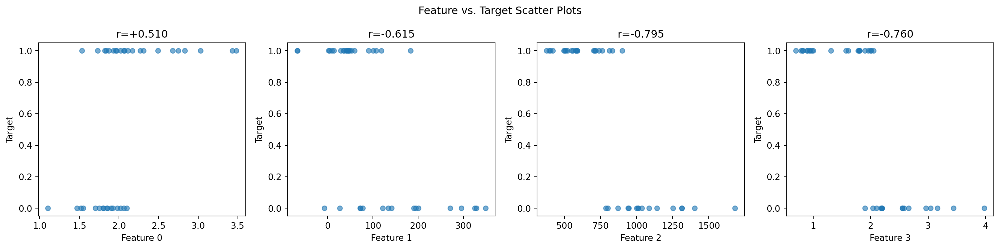
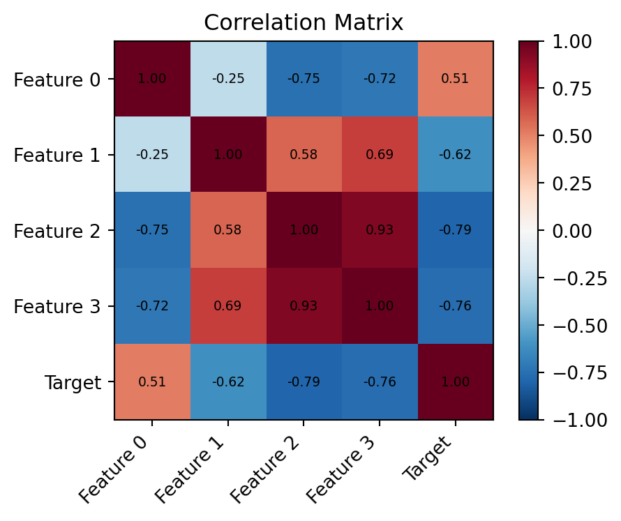
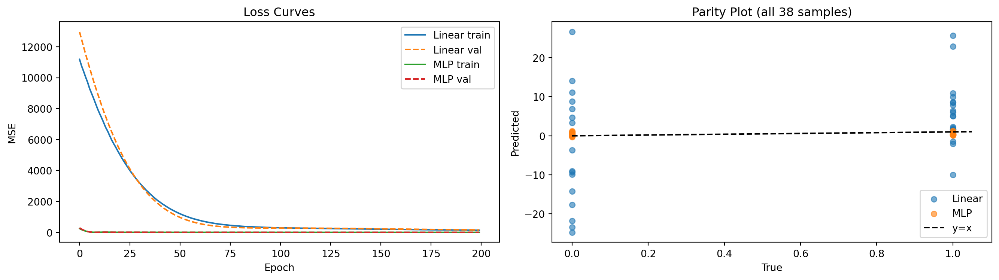

!pip install git+https://github.com/ECLIPSE-Lab/Ai4MatLectures.git "mdsdata>=0.1.5"MG Week 5: Feature Descriptors for Chemical Elements
Linear regression and descriptor analysis on ChemicalElementsDataset

Learning Objectives
- Understand the role of feature descriptors in materials informatics
- Identify which descriptors correlate most strongly with a target property
- Appreciate the challenges of training ML models on very small datasets
Setup
import torch
import torch.nn as nn
from torch.utils.data import DataLoader, random_split
from ai4mat.datasets import ChemicalElementsDataset
import matplotlib.pyplot as plt
import numpy as np1. Load the Data
ds = ChemicalElementsDataset()
print(f"Dataset size: {len(ds)}")
x0, y0 = ds[0]
print(f"Sample x shape: {x0.shape}, dtype: {x0.dtype}")
print(f"Sample y (target property): {y0:.4f}, dtype: {y0.dtype}")
n_features = ds[0][0].shape[0]
print(f"\nNumber of features: {n_features}")Dataset size: 38
Sample x shape: torch.Size([4]), dtype: torch.float32
Sample y (target property): 1.0000, dtype: torch.float32
Number of features: 4# Collect all data
X_all = torch.stack([ds[i][0] for i in range(len(ds))]).numpy()
y_all = torch.tensor([ds[i][1].item() for i in range(len(ds))]).numpy()
print(f"X shape: {X_all.shape}")
print(f"y range: [{y_all.min():.3f}, {y_all.max():.3f}]")
print(f"\nIMPORTANT: Only {len(ds)} samples. This is an extremely small dataset.")
print("Train/val splits will give only ~7 validation samples.")
print("In practice, cross-validation would be more reliable than a single split.")X shape: (38, 4)
y range: [0.000, 1.000]
IMPORTANT: Only 38 samples. This is an extremely small dataset.
Train/val splits will give only ~7 validation samples.
In practice, cross-validation would be more reliable than a single split.2. Correlation Analysis
Before training any model, explore which features correlate with the target.
feature_names = [f"Feature {i}" for i in range(n_features)]
# Compute Pearson correlation between each feature and target
correlations = []
for j in range(n_features):
x_j = X_all[:, j]
r = np.corrcoef(x_j, y_all)[0, 1]
correlations.append(r)
print("Pearson correlation with target:")
for j, (name, r) in enumerate(zip(feature_names, correlations)):
bar = "#" * int(abs(r) * 30)
sign = "+" if r >= 0 else "-"
print(f" {name}: {r:+.3f} {sign}{bar}")Pearson correlation with target:
Feature 0: +0.510 +###############
Feature 1: -0.615 -##################
Feature 2: -0.795 -#######################
Feature 3: -0.760 -####################### Feature-target scatter plots
fig, axes = plt.subplots(1, n_features, figsize=(4 * n_features, 4))
for j, ax in enumerate(axes):
ax.scatter(X_all[:, j], y_all, alpha=0.6, s=30)
ax.set_xlabel(feature_names[j])
ax.set_ylabel("Target")
ax.set_title(f"r={correlations[j]:+.3f}")
plt.suptitle("Feature vs. Target Scatter Plots")
plt.tight_layout()
plt.show()
# Correlation heatmap (features + target)
data_for_corr = np.column_stack([X_all, y_all])
labels_corr = feature_names + ["Target"]
C = np.corrcoef(data_for_corr.T)
fig, ax = plt.subplots(figsize=(5, 4))
im = ax.imshow(C, cmap='RdBu_r', vmin=-1, vmax=1)
plt.colorbar(im, ax=ax)
ax.set_xticks(range(len(labels_corr))); ax.set_xticklabels(labels_corr, rotation=45, ha='right')
ax.set_yticks(range(len(labels_corr))); ax.set_yticklabels(labels_corr)
ax.set_title("Correlation Matrix")
for i in range(len(labels_corr)):
for j in range(len(labels_corr)):
ax.text(j, i, f"{C[i,j]:.2f}", ha='center', va='center', fontsize=7)
plt.tight_layout()
plt.show()
3. Train/Val Split
n_train = int(0.8 * len(ds))
n_val = len(ds) - n_train
train_ds, val_ds = random_split(ds, [n_train, n_val])
train_loader = DataLoader(train_ds, batch_size=16, shuffle=True)
val_loader = DataLoader(val_ds, batch_size=16, shuffle=False)
print(f"Train: {n_train} | Val: {n_val}")
print(f"Warning: only {n_val} validation samples — results may be noisy!")Train: 30 | Val: 8
Warning: only 8 validation samples — results may be noisy!4. Define the Model
# Start with linear model (most interpretable)
linear_model = nn.Linear(n_features, 1)
print(f"Linear model: {n_features} features → 1 output")
# Then small MLP
mlp_model = nn.Sequential(
nn.Linear(n_features, 16), nn.ReLU(),
nn.Linear(16, 8), nn.ReLU(),
nn.Linear(8, 1)
)
print(f"MLP model: {sum(p.numel() for p in mlp_model.parameters())} parameters")Linear model: 4 features → 1 output
MLP model: 225 parameters5. Training Loop
def train_regression(model, train_loader, val_loader, n_train, n_val, epochs=200, lr=1e-3):
criterion = nn.MSELoss()
optimizer = torch.optim.Adam(model.parameters(), lr=lr, weight_decay=1e-4)
train_losses, val_losses = [], []
for epoch in range(epochs):
model.train()
ep_loss = 0.0
for x_batch, y_batch in train_loader:
optimizer.zero_grad()
y_pred = model(x_batch).squeeze(-1)
loss = criterion(y_pred, y_batch)
loss.backward()
optimizer.step()
ep_loss += loss.item() * len(x_batch)
train_losses.append(ep_loss / n_train)
model.eval()
v_loss = 0.0
with torch.no_grad():
for x_batch, y_batch in val_loader:
y_pred = model(x_batch).squeeze(-1)
v_loss += criterion(y_pred, y_batch).item() * len(x_batch)
val_losses.append(v_loss / n_val)
return train_losses, val_losses
torch.manual_seed(42)
lin_tl, lin_vl = train_regression(linear_model, train_loader, val_loader, n_train, n_val)
torch.manual_seed(42)
mlp_tl, mlp_vl = train_regression(mlp_model, train_loader, val_loader, n_train, n_val)
print(f"Linear model — final val MSE: {lin_vl[-1]:.4f}")
print(f"MLP model — final val MSE: {mlp_vl[-1]:.4f}")Linear model — final val MSE: 153.8912
MLP model — final val MSE: 0.36646. Evaluation
fig, axes = plt.subplots(1, 2, figsize=(14, 4))
axes[0].plot(lin_tl, label='Linear train'); axes[0].plot(lin_vl, '--', label='Linear val')
axes[0].plot(mlp_tl, label='MLP train'); axes[0].plot(mlp_vl, '--', label='MLP val')
axes[0].set_xlabel("Epoch"); axes[0].set_ylabel("MSE"); axes[0].set_title("Loss Curves")
axes[0].legend()
# Parity plot: predicted vs true
X_tensor = torch.tensor(X_all, dtype=torch.float32)
y_tensor = torch.tensor(y_all, dtype=torch.float32)
linear_model.eval(); mlp_model.eval()
with torch.no_grad():
y_lin = linear_model(X_tensor).squeeze(-1).numpy()
y_mlp = mlp_model(X_tensor).squeeze(-1).numpy()
axes[1].scatter(y_all, y_lin, alpha=0.6, label='Linear', s=30)
axes[1].scatter(y_all, y_mlp, alpha=0.6, label='MLP', s=30)
lim = [y_all.min() * 0.95, y_all.max() * 1.05]
axes[1].plot(lim, lim, 'k--', label='y=x')
axes[1].set_xlabel("True"); axes[1].set_ylabel("Predicted")
axes[1].set_title("Parity Plot (all 38 samples)"); axes[1].legend()
plt.tight_layout(); plt.show()
Exercises
- Which feature has the highest absolute Pearson correlation with the target? Train a linear model using only that single feature (
nn.Linear(1, 1)). How much worse is the R² compared to using all 4 features? - With only 38 samples, is a single 80/20 train/val split meaningful? Try splitting 5 different ways using different
random_splitcalls. How much does the reported val MSE vary? - In real materials informatics, domain knowledge guides descriptor choice. If you knew one feature was “atomic number” and another was “electronegativity,” which would you expect to correlate most with melting point? How does the correlation analysis confirm or challenge this intuition?